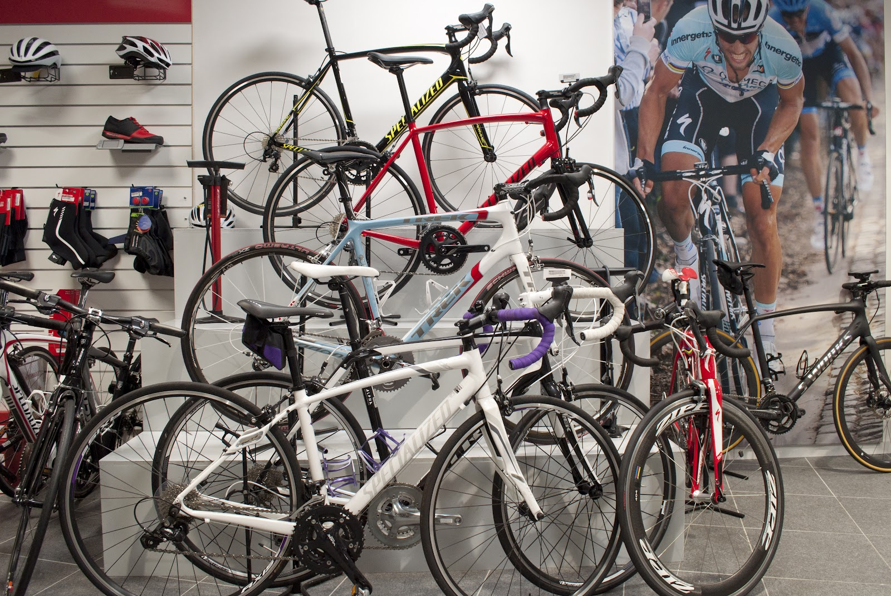
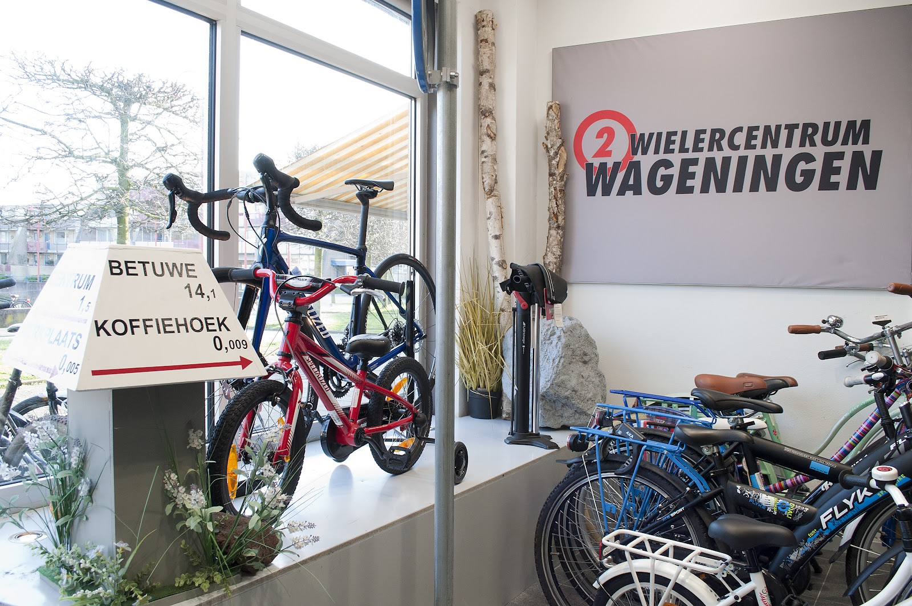
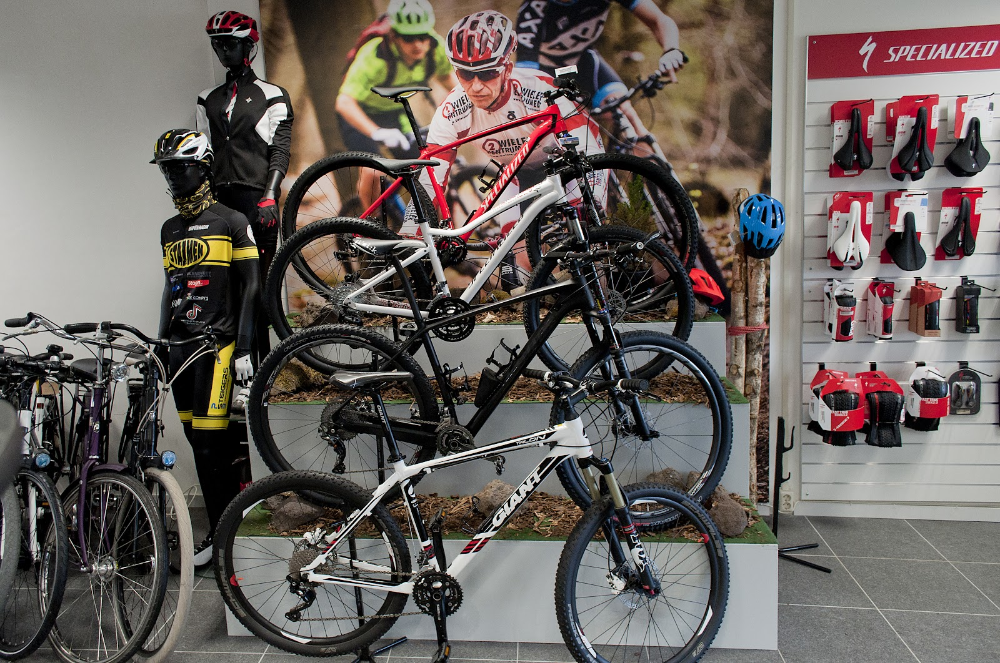
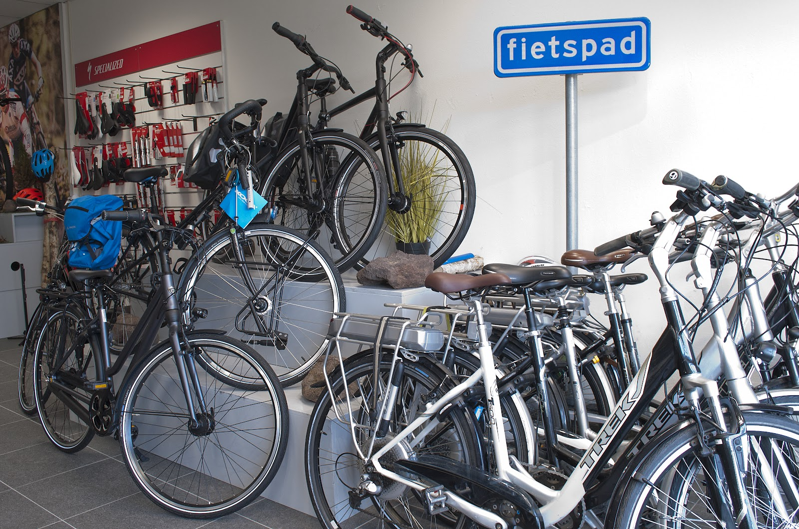
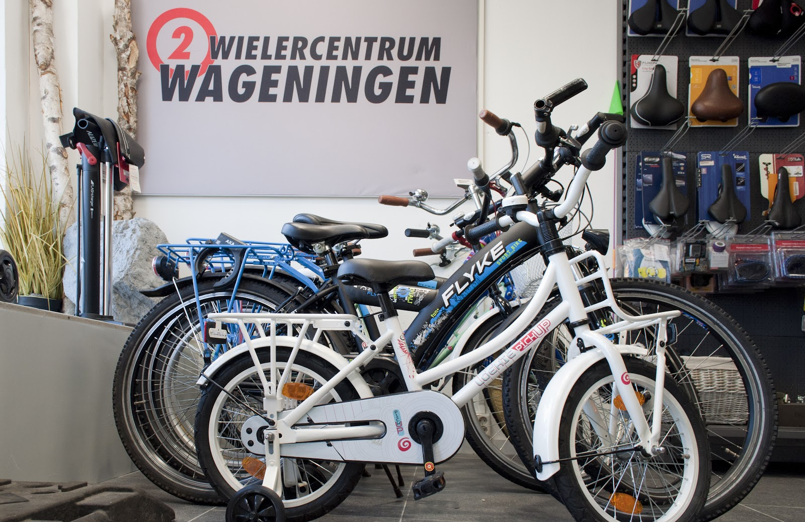
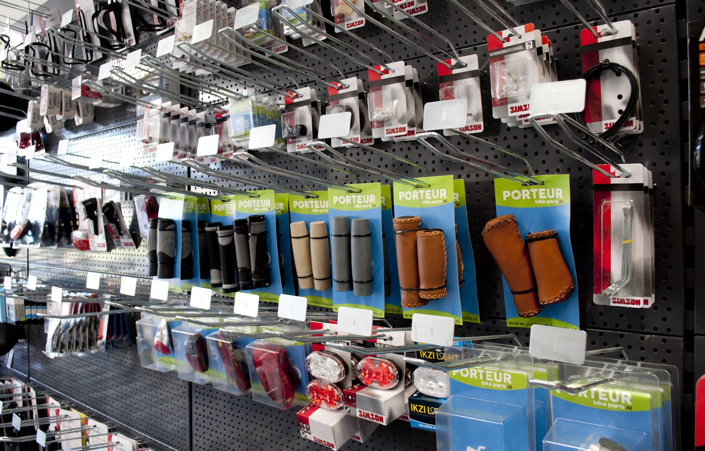
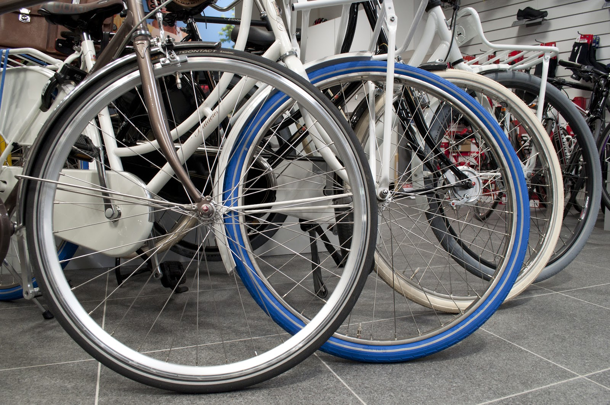
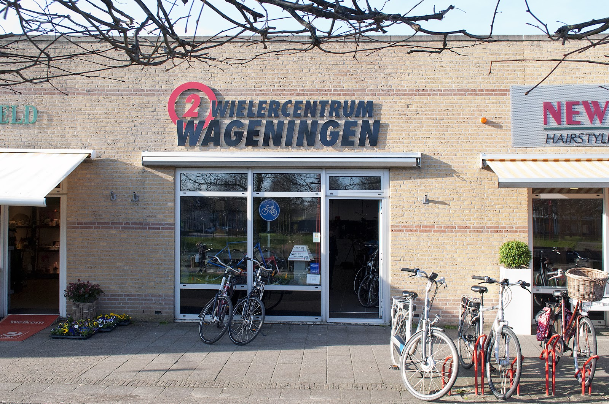

Racefietsen
Als Specialized Elite shop hebben we de racefietsen van Specialized in de winkel staan. We helpen je persoonlijk aan de fiets die bij je past.
E-bikes, racefietsen, mountainbikes, stads- en kinderfietsen van Specialized, Koga en Gazelle. En een werkplaats die je fiets weer goed laat rijden.
Dinsdag t/m vrijdag 9:00 tot 18:00, zaterdag tot 16:30.

We zijn Specialized Elite shop en regiodealer, en dealer van Koga en Gazelle. In de winkel staat een ruime collectie waar je rustig tussen kunt kiezen, met iemand die meedenkt over wat bij jou past.

Als Specialized Elite shop hebben we de racefietsen van Specialized in de winkel staan. We helpen je persoonlijk aan de fiets die bij je past.

Voor de bossen rond Wageningen en verder. Met helmen, kleding en zadels erbij.

Elektrisch fietsen is onze specialiteit. Van Gazelle Grenoble tot Koga, voor dagelijks woon-werk of een lange tocht.

Van de eerste fiets met zijwieltjes tot een stoere fiets voor de middelbare school.

Handvatten, verlichting, zadels, tassen.
Onderhoud, reparatie of een lekke band: in onze moderne werkplaats kijken we je fiets na. We zijn Shimano Service Center, dus versnellingen en remmen zijn bij ons in goede handen.
Pech onderweg in Wageningen?
Bel de winkel, dan kijken we hoe we je snel weer op weg helpen.
Bel 0317 785 146
"Pech onderweg met nog anderhalve dag te gaan. De heren hebben ervoor gezorgd dat we onze weg weer snel konden vervolgen, waarvoor dank!"
4,9
van 5 sterren,
66 reviews op Google
★★★★★
"Ik heb bij 2Wielercentrum Wageningen een tweedehands vouwfiets gekocht (nadat mijn vorige was gestolen in Utrecht). Tweedehands is tweedehands. In het begin waren er een paar onvoorziene mankementen. Die hebben ze prima en gratis opgelost. Ik ben helemaal blij met mijn vouwfietsje."
★★★★★
"Uitstekend geholpen door Denis met de aanschaf van mijn nieuwe racefiets. Erg blij met de fiets en ook de persoonlijke service."
★★★★★
"Top service! Het kleinste schroefje om het derailleurpadje mee vast te zetten blijkt niet voorradig. Niet getreurd kosten nog moeite gespaard en net zolang gespeurd in de winkel en het magazijn tot er een langere variant werd gevonden. Keurig op lengte gemaakt en de schroefdraad getest. (...)"
★★★★★
"We hebben er 2 Gazelle Grenoble C5 gekocht en we zijn super geholpen. Goede en mooie zaak en super vriendelijk personeel. Service is top."

0317 785 146 info@2wielercentrumede.nl
| Maandag | Gesloten |
| Dinsdag | 9:00 tot 18:00 |
| Woensdag | 9:00 tot 18:00 |
| Donderdag | 9:00 tot 18:00 |
| Vrijdag | 9:00 tot 18:00 |
| Zaterdag | 9:00 tot 16:30 |
| Zondag | Gesloten |